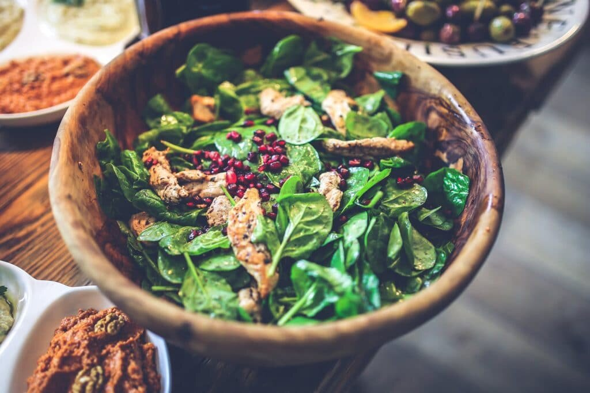

La alimentación es la base de todo. La manera como comemos influye en cada aspecto de nuestra vida. Cuando pensamos en atletas y deportistas, no nos cuesta imaginarnos que para lograr un mejor desempeño en sus disciplinas, deben tener una cuidada y estricta dieta. Cada alimento que consumen forma parte de una fórmula que garantiza el mejor rendimiento posible. La práctica del yoga no escapa a esta premisa.
Tener una buena alimentación es fundamental para poder disfrutar de todos los beneficios del yoga, que involucra no solo el cuerpo, sino la mente. Cuando pensamos en comer bien, tenemos que pensar en equilibrio, en balance, en variedad, en la justa medida de los alimentos que consumimos. En el caso de los niños, la cosa se puede poner interesante, pues sabemos que comer sano suele relacionarse con comida aburrida o poco gustosa. Pero, ¡no tiene por qué ser así!
Lo más recomendable es, sin duda, vincular a los niños con lo que comen. Esto no significa dejar en sus manos la elección de los alimentos –porque sabemos que más de uno elegirá siempre la pizza sobre el brócoli–, sino hacerlos partícipes de su alimentación. Ir al supermercado y mostrarles los distintos tipos de alimentos es un buen primer paso. Cada sección es un desfile de colores, sabores y aromas sobre los que se pueden hacer preguntas que nos orientarán sobre lo que les apetece y lo que quizás no tanto. ¿Qué te parece esta fruta? ¿A qué te huele, cómo te la comerías? ¿Crees que sea más dulce o más ácida?
Por otro lado, sembrar algunos alimentos en casa –especias, frutas de temporada– les enseña sobre responsabilidad, sobre respeto a otro ser vivo. Esto ayuda también a explicarles de dónde viene la comida que comemos, y a que tengan perspectiva sobre todos los actores que conforman la cadena de la alimentación. Además de colaborar con la noción de sustentabilidad, tan importante para el mundo que queremos.
Para pensar en hábitos alimenticios saludables, es importante partir del hecho de que no hay alimentos absolutamente buenos ni absolutamente malos. La medida en la que estos pueden ser más o menos apropiados para nuestra salud, dependerá de cómo elijamos consumirlos y combinarlos. En principio una dieta que beneficie la práctica del yoga, y la vida en general, debe ser rica en productos frescos. Montse Folch, directora de nutrición del Institut Vila-Rovira, asegura que entre los principios para la acertada nutrición, está evitar las grasas saturadas, los excesos, la bollería industrial, los azúcares refinados. Se recomienda entonces evitar alimentos enlatados o altamente procesados, que además de contener una gran cantidad de agentes conservantes, pierden muchos de sus nutrientes.
Involucrar a los niños en la preparación de algunas sencillas recetas también los ayuda interesarse por lo que comen. Se puede empezar cocinando sus preparaciones favoritas y de ahí hacer variaciones. La pizza, por ejemplo, se puede hacer con una masa integral, o variar sus toppings con vegetales cortados con formas divertidas que ellos mismos propongan. Los expertos coinciden en que en la variedad y el equilibrio está la clave para una mejor alimentación, y esa variedad puede surgir de la fértil creatividad infantil.
Sin embargo, no solo la manera como elegimos y preparamos la comida determina nuestra nutrición. El propio hecho de comer es esencial, ya que de eso depende cómo el cuerpo recibe lo que los alimentos tienen para aportarnos. En ese sentido es importante no hacer de la mesa un lugar de estrés ni de reproches, ya que si se come en un estado de alteración, no importa qué tan sanos sean los alimentos, lo más probable es que no los aprovechemos al máximo.
Conversar con los niños sobre lo que comen es fundamental. Qué les ha parecido, cómo encuentran las texturas, cuáles son los sabores que recuerdan, los colores. Todo esto es importante para desarrollar una mente clara sobre los alimentos que forman parte de su dieta. Y, por supuesto, el secreto para el éxito de la digestión es su correcta masticación. Un consejo sencillo, tanto para niños como para adultos, que garantiza mejores condiciones para este proceso: no te metas un nuevo bocado hasta que no termines el que estás masticando. ¡Así de fácil!
Hacer del comer un lugar de encuentro y de goce es una de las mejores maneras de garantizar la buena alimentación. Siempre desde la comunicación, el respeto y la comprensión. Así pues comen los yogis, con conciencia y sabiendo aprovechar las bondades de cada comida ¡Buen provecho!